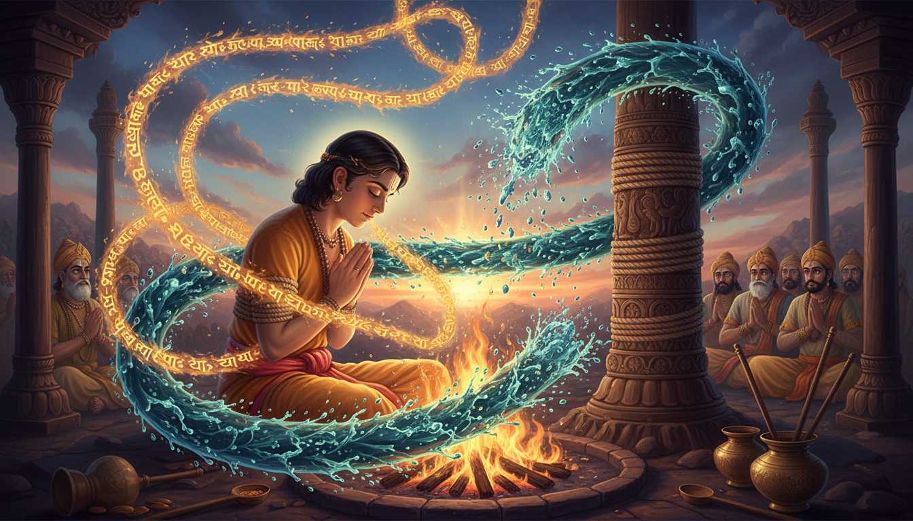

Most of the bondage remedies sold in India today treat the bond as an accident. A curse slipped in, a planet turned hostile, an ancestor forgot a payment — and the fix is to wash it off. Shunahshepa is the one case in the Vedic corpus where the bond was legal. It was owed, it was contracted, it was paid for in cows, and it was tied by a father's own hands. And it still came off.

That is why his rite matters. If your life feels bound — a debt that will not close, a marriage that will not move, a body that keeps returning to the same illness, a family in which you are the one everybody leans on and nobody protects — you are not looking for a curse-removal. You are looking for the procedure that unties a knot which has every right to be there. The tradition preserved exactly one, and it belongs to a teenage boy who was sold three times in a single afternoon.
This is the working manual for that rite: who he was, why the noose has three knots, the arithmetic of the ninety-eight verses the tradition rounds up to a hundred, and the form in which it can still be done — with a post and a river if you have them, with a copper pot and a tap if you do not.
Who Shunahshepa Was
Shunahshepa — Śunaḥśepa, "of the lineage of Śunaḥ" by one reading, the name's etymology is disputed and the tradition itself never settles it — is the son of Ajigarta Sauyavasi, a starving brahmin of the line of Angiras. The family is destitute. That detail is not decoration; it is the engine of the whole story.
The frame narrative comes from the Aitareya Brahmana (7.13–18), and it is repeated with variations in the Balakanda of the Ramayana (sarga 61) and borrowed again by the Sankhyana and Baudhayana Shrauta Sutras. King Harishchandra of the Ikshvaku line had a hundred wives and no son. On Narada's advice he prayed to Varuna, lord of waters and guardian of ṛta — cosmic order, and more importantly, of contracts. Varuna granted the son on one condition: the boy would later be sacrificed back to him. The son, Rohita, was born. Varuna came to collect. The king postponed. Varuna struck him with a wasting abdominal illness. Rohita, advised by Indra, refused to be the victim.
In the sixth year of wandering, Rohita met Ajigarta in the forest and bought one of his three sons for a hundred cows. The eldest was spared because a father will not give the first. The youngest was spared because a mother will not give the last. The middle son was given.
Four of the greatest rishis alive were assembled to conduct the rite — Agastya as udgātṛ, Jamadagni as adhvaryu, Vasishtha as brahman, Vishvamitra as hotṛ. All four refused to bind the boy to the sacrificial post. So Ajigarta sold his son a second time, for another hundred cows, and bound him himself. Then the priests refused to kill him. So Ajigarta offered to do that too, for a third hundred.
At that point Shunahshepa recited. The Anukramani — the Vedic index that assigns every hymn to a seer — credits him with the hymns of Rigveda 1.24 through 1.30: fifteen, twenty-one, eleven, thirteen, nine, seven and twenty-two verses. Ninety-eight verses. Seven hymns. The tradition simply calls them the hundred.
And then, in the last of them, at the moment of the dawn, the bonds loosened. Harishchandra's illness broke at the same instant. Vishvamitra adopted him on the spot, gave him the name Devarata — "god-given" — and made him his eldest son, which is a separate and uglier story about the fifty sons who refused to accept it.
Three things about this are load-bearing for the rite, and all three are usually dropped from the devotional retelling.
The bond was legitimate. No one in the story is innocent and no one is a villain. The father needed a son, Varuna named a price, the price was accepted, a substitute was legally purchased. This is not a demon's grip. It is a contract with a due date, and the tradition's whole point is that a contract can be discharged without being destroyed.
He was bound, not killed. The post and the rope are the subject. The blade never falls. Everything the rite does happens between the tying and the striking — which is exactly where most people reading this actually live.
The release came at dawn, not at noon. The final hymn turns to Ushas, the dawn. The tradition is precise about this: the loosening is not a burst of power, it is a turn of the light. Any rite built from this material that does not end facing the sunrise has lost the mechanism.
Why Varuna, and Not Shani
Almost every bondage remedy in the market is addressed to Shani, and for a real reason: Saturn is the planet of time, debt, delay and the slow foreclosure of options. But Shani's grip is chronological. He withholds. He does not hold a rope.
Varuna holds a rope. The word is pāśa — noose, tether, snare — and it is Varuna's defining attribute in the Rigveda, more than the waters and more than the thousand eyes. His spaśa, the spies, watch the oath; the noose is what happens when the oath is broken or unpaid. Varuna does not punish in anger. He enforces. He is the divine bailiff, and his instrument is a cord with knots in it.
This distinction is the whole diagnostic value of the rite. Four conditions look identical from the inside and require four different instruments:
- Śāpa — a curse. Someone with will and emotion wished you harm. It behaves like a wound: it hurts, it festers, it can be healed.
- Pāśa — a bond. A contract, an oath, a vow, a debt, a promise made by you or for you. It does not hurt. It holds. You can live a whole life inside it, comfortably, and never notice you have not moved.
- Doṣa — a flaw. A structural defect in the chart or the lineage. It repeats.
- Ṛṇa — a debt. It has a number attached. It can be paid off.
Shunahshepa's situation was pāśa plus ṛṇa: a bond that existed because a debt existed. And the reason his hundred verses are still recited is that this is the most common condition of all, and the least served. Nobody thinks to look for a contract. Everybody looks for a curse.
There is an astronomical footnote worth knowing. David Gordon White has argued that the original Rigvedic layer of the myth may encode an observation about the three stars of the Ursa Minor tail, which never descend below the horizon — a knot in the sky that is never untied. Whether or not that is the origin, it is a perfect image for the condition: the bond that holds because it has always held, and that most people assume is simply the shape of the sky.
Why the Middle Son
The story's most quoted cruelty is the sale. Its most useful detail is the choice of which son.
The eldest is spared because he carries the name and the inheritance — he has a claim. The youngest is spared because the mother's body refuses — he has a protector. The middle son has neither. He has no claim on the past and no protector for the future. He is, in the precise language of family systems, the one who can be spent.
If you have ever been that person — the one who adjusted, who mediated, who absorbed the family's shortfall because someone had to and you were the one standing in the middle — you are reading the oldest description of your position in the literature. The rite exists for the middle.
And the middle position has a signature that shows up in a chart with almost embarrassing clarity. Pāpa-kartarī — the "scissors" — is the configuration in which a house or a lagna sits hemmed between malefics, with no benefic aspect to relieve it. Śrapita and viṣa yogas produce the same shape: held between two pressures, visible to both, protected by neither. Shunahshepa bound to a post between a father who sold him and priests who would not touch him is that configuration drawn as a story.
So the first diagnostic question this rite asks is not "who cursed me" but "am I the one in the middle, and who is holding the two ends?"
The Three Nooses
The single verse on which the entire practice is built is Rigveda 1.24.14, from the Shunahshepa hymns, addressed to Varuna:
ud uttamaṃ varuṇa pāśam asmād avādhamaṃ vi madhyamaṃ śrathāya —
"Loosen, O Varuna, the uppermost noose from us; slacken the middle; and the lowest — release."
Three nooses, named by height. The commentarial tradition reads the three heights as three registers of binding, and it is remarkably consistent across schools:
The upper noose — the head. Saṅkalpa, vow, oath, initiation, the word given. This is the noose of the promise you made and did not keep, or the promise made over you that you never consented to. It governs cognition: you cannot think your way out because the thinking itself is inside the knot. In a chart it is the first, fifth and ninth houses — self, intelligence, dharma — and it is what a Ketu in those houses or an afflicted Jupiter actually describes.
The middle noose — the heart and chest. Lineage, marriage, the kula. This is the noose of relationship: the marriage that will not complete, the child that will not come, the family role you cannot step out of. Second, seventh and eleventh houses. Varuna's middle noose is the reason so many people report that their life is fine except in exactly one relationship, and that the exception has been running for years.
The lower noose — the feet, the body, the ground. Health, land, money, dwelling, the physical capacity to move. Fourth, sixth and tenth houses. This is the noose that shows up as a body that will not heal and a bank balance that will not rise, in a person whose mind and relationships are fine.
There is a second, older reading of the same three, and the rite uses both. The three knots are the three debts — deva-ṛṇa to the gods, ṛṣi-ṛṇa to the seers, pitṛ-ṛṇa to the ancestors. Every twice-born person is born owing all three. Most people pay the first with occasional ritual and the second with nothing at all. The third they discover only when a line begins to fail.
The crucial mechanic, and the one thing to get right: the nooses were tied from the top down, but they come off from the bottom up. Verse 1.24.14 asks for the uppermost first in the poetry — but the practice reverses it. You untie the lowest knot first. A body that is still bound in the feet cannot hold a head that has been freed; the release has to travel upward or it does not travel at all.
The Arithmetic: Ninety-Eight, Not a Hundred
Sit with the count for a moment, because it is the most beautiful thing in the material and it is also the practical key to performing the rite.
Rigveda 1.24 has 15 verses. 1.25 has 21. 1.26 has 11. 1.27 has 13. 1.28 has 9. 1.29 has 7. 1.30 has 22. The total is 98.
The tradition calls them the hundred anyway. This is not sloppiness. In Vedic counting, a śata — a hundred — is a completed vow, not an arithmetic fact. A hundred is what a count becomes when the count is finished. The two missing verses are not lost; they were never in the text. They are yours.
This is the single most important instruction in the whole rite, so it is stated plainly: when you perform the Shunahshepa rite, you compose the missing two verses yourself. Out loud, in your own language, in front of the post.
The first of the two is the verse of the debt — you name the bond. Not vaguely. What it is, who holds the other end, and how long it has been tied. The second is the verse of the release — you say what the bond becomes when it is untied. Not "let me be free of it," which is a wish. Something in the form: "What was owed is paid. What was tied is loosed. What was named is now a witness."
Ninety-eight recited, two composed, one hundred complete. The rite cannot be performed by a priest on your behalf for exactly this reason — he can recite the ninety-eight, and he cannot supply your two.
The Working Form: Shunahshepa's Bandhana-Moksha Rite
This is the sequence as it survives in the Shrauta-derived practice and in the household form that descended from it. The full form is done outdoors with a post and a river. The reduced form is done in one night with a copper pot and any flowing water. The tradition is explicit that the reduced form is not a lesser rite — it is the same rite with fewer witnesses.
Requirements. A post — khādira (khadira) wood if you can get it, bamboo or a straight branch of any unthorned tree if you cannot. It must be new, uncut from a tree you have not used for anything else, and it must be set into earth, not propped. Three lengths of raw thread, each cut to your own height measured from the floor to the crown of your head: one white, one red, one black. Whole turmeric roots, not powder — three of them. A copper vessel with water. Black sesame. Raw milk. A ghee lamp. A coconut for the closing gift. A piece of unbroken darbha grass. If you have a river, you need nothing else; if you do not, you need one vessel of water you will later pour into moving water.
Timing. Begin on a Friday or a Saturday — the days of Venus and Saturn, the two planets of contract and consequence — in the waxing fortnight. Avoid the day of an eclipse, amavasya, and chaturdashi. The classical occasion is Varuna's own — the full moon, and specifically the full moon of Shravana or Kartika when the moon is in a water sign. The one non-negotiable requirement is that the rite ends at sunrise. If you cannot arrange the night, do the reduced form and still end at sunrise.
Stage 1 — The post: fixing the point that does not move
Choose ground you can leave alone: a riverbank, a field corner, a courtyard edge that no one will walk over. Dig, and set the post so that it stands about one and a half metres above the ground and is genuinely firm. This is the yūpa, the sacrificial post, and its function is not symbolic decoration — it is the fixed reference against which a knot can be tied and, more importantly, can be seen to come undone.
Mark three bands on the post with turmeric paste: one at the top for the head, one at chest height for the heart, one at ankle height for the feet. Stand facing it, both palms on the post, and say once: "This is the post. I did not choose it. I am here to leave it."
If you are doing the reduced form: use a copper vessel as the post, three turmeric bands around its neck, middle and base, set on a clean cloth on the floor. It is a smaller post with the same three heights. It works.
Stage 2 — The three threads: measuring the bond to your own size
The threads are cut to your height for a reason that is easy to miss. The noose in the story was not a metaphor — it was measured to a boy. A bond is always cut to fit the person inside it, and it cannot be loosened by a rite that is not cut to the same measure.
Measure from the floor to the crown of your head, once. Cut all three threads to that length. Hold each one, and before it goes anywhere near the post, name what it binds:
- White in the right hand, at the top band: the head. Name the vow, the promise, the oath, the thing you said you would be.
- Red at the chest band: the heart. Name the relationship, the person, the line.
- Black at the ankle band: the feet. Name the body, the money, the ground. Speak plainly, without shame.
If you have a chart reading in hand, this is where you place it: put the affliction where it actually lands. A Saturn–Rahu contact on the second house is a middle noose. A Ketu in the fourth is a lower noose. The upper noose is almost always a Jupiter or ninth-house matter, because that is where vows live.
Stage 3 — Binding: three knots, tied deliberately
Tie one knot in each thread around the post at its band — not around yourself, and never around another person. This is the line that cannot be crossed, and the tradition warns about it with unusual force: the Shunahshepa rite is a moksha rite. Inverted, it becomes a bandhana rite, and a bond tied by this procedure in order to hold someone is the one thing the material explicitly forbids. The noose in the story was tied by a father against his son, and the story exists to get it off. Do not become Ajigarta.
Tie the white knot saying: "This was given, not taken." Tie the red: "This was owed, not stolen." Tie the black: "This was measured, and it will be measured again."
Then sit. Not in front of the post — beside it, in the position you would sit in if you were waiting for something. The waiting is part of the rite. In the story the boy waited through a whole ritual before he spoke.
Stage 4 — The hundred: ninety-eight and two
The recitation begins after dark and must still be going at sunrise.
The core is Rigveda 1.24.14, the three-noose verse, and it is recited in a three-part count: thirty-three repetitions for the upper noose, thirty-three for the middle, thirty-two for the lower. That is ninety-eight. If you are doing the householder's full form, make it 108 — thirty-six, thirty-six, thirty-six — with the extra ten given to Varuna himself at the end.
Between the sections, do not rush. After the white count, sit in silence and let the head finish speaking. After the red count, the same. The middle noose takes the longest to loosen and most people discover at this point that they have been carrying a name they have never said out loud.
Then the two verses. Stand, face the post, and compose them yourself. Spoken, not written. They do not need metre, Sanskrit, or elegance. They need to be true, and they need to be said in the hearing of something that is not you — the post, the river, the ground.
The verse of the debt. Name it. The act, the year if you know it, the person or line. If it is inherited and you genuinely do not know, name the line and the kind: "Whatever was contracted in this house before I was born, by word or by signature or by silence — I name it now as mine to discharge."
The verse of the release. Say what it becomes. The tradition's own formula is a conversion, not an erasure: the bond does not vanish, it changes office. What was a creditor becomes a witness. What was a rope becomes a record.
If you have darbha grass, hold one unbroken blade through the two verses. Darbha is the ritual instrument that is held rather than used — the thing in your hand that is not a weapon.
Stage 5 — The dawn turn: untying from the bottom up
This is the moment the rite is built for, and the only one that must not be moved.
As the sky begins to lighten — not at sunrise, but at the first change of colour, when you can just distinguish the horizon from the ground — turn to the east and begin to untie. Black first. Then red. Then white. Bottom to top, always.
Do not cut the threads. Untie them. If a knot has pulled tight, work it loose with your fingers and your patience; a cut cord is a severed bond and leaves the debt unpaid, which is a different and worse condition. This is the most common mistake in the whole practice and the most consequential.
As each knot comes free, say only: "Loosed." Not a speech. The boy in the story did not negotiate at the end.
The last hymn in the sequence turns to Ushas, the dawn, and the tradition is unambiguous about the result: the bonds were loosened. Not broken, not burned — loosened, by the light arriving. So when the white thread finally comes off the post, stand in the first direct sun with all three threads in your open hand and let them lie there until your palms are warm. That is the whole mechanism. Everything before it was preparation.
Stage 6 — Dissolution: giving the knots to moving water
Take the three threads, the turmeric roots, and the black sesame to flowing water — a river, a stream, an irrigation channel. Not a bucket, not a drain in the house, not standing water. The cords go in whole, with the knots still in them, and they go in downstream of where you stand, so that nothing you have untied is left in your hand.
Say the two verses once more, and let them go. Turn and walk away without looking back at the water. The instinct to watch is the instinct that re-ties.
The post stays. Leave it standing where it is for a full year; do not pull it up, do not reuse it, do not put anything else on it. If the ground must be cleared, cut it at ground level after the year and give the wood to fire. This is the one part of the rite that outlives the night, and its purpose is to give the released bond somewhere to be absent from.
Stage 7 — The second name: Devarata
The story does not end with the loosening. It ends with a renaming. Vishvamitra adopts the boy and calls him Devarata — god-given — and the new name is not a reward for surviving. It is the mechanism that keeps the old bond from re-forming. A person with the same name, in the same house, doing the same work, will be re-tied within a season.
So the last act is small and easy to skip, and you should not skip it. Within the three days after the rite, change one thing that identifies you — a name you are called by in one context, a signature, the way you introduce yourself, the name on a household account. Not legally. Functionally. Say to one person, out loud: "Call me this now."
And make one vow that is deliberately small and completable — something you will do for a fixed count of days, thirty or forty, that costs you a few minutes and cannot fail. The upper noose is the noose of the broken vow, and the way it is kept shut after release is by giving the mouth a vow it can actually keep.
The reduced form
For those without a post, a river, or a night:
One copper vessel as the post, three turmeric bands. One thread of each colour, cut to your height. Tie three knots at the three heights while sitting, at any hour after dark. Recite 1.24.14 thirty-three times. Speak the two verses. Wait, without doing anything, until the light changes. Untie black, red, white. Put the threads into a vessel of water, carry that water to any flowing source within three days, and pour it downstream. Leave the vessel unused for a year.
Total time: one night. Requirements: three metres of thread, three turmeric roots, one copper pot, one tap.
Where the Bond Shows in a Chart
The rite is diagnosed, not prescribed. Three configurations in particular respond to it, and they are worth naming because they are routinely misread as curses.
Pāpa-kartarī on the lagna or the moon. Malefics hemming the first or fourth house with no benefic relief. This is the Shunahshepa signature exactly — held between two ends, claimed by neither. The noose here is a middle noose by default, whatever the houses involved, because the person's whole life is organised around standing in a gap.
Saturn–Rahu contacts on the second, seventh, or eleventh. The classical śrapita and viṣa combinations. These read as pāśa rather than śāpa: not a wound, a hold. The marker in real life is that nothing is dramatically wrong and nothing has changed in years.
Ketu in the fourth, eighth, or twelfth, with the moon unsupported. The lower noose. Body, land, dwelling, the sense of having ground under the feet. The tell is a person who is competent everywhere and cannot rest anywhere.
To these add one non-chart marker that the tradition prizes more than any of them. A bond that was contracted has a date. If you can name the year the trouble began — a signature, an oath, a promise, a move, a marriage, a debt taken in your name — then you are not dealing with a curse and you should not be paying for a curse remedy. You are dealing with a noose, and the Shunahshepa rite is the specific instrument for it.
Cautions
This material is old and it is sharp. Six things the tradition itself insists on.
Do not perform the rite to bind. Stated once already and worth stating twice. The procedure is a moksha rite. Used to hold a person — a spouse, a child, an estranged partner — it becomes exactly the act the story was told to undo, and the tradition treats this as the worst available misuse.
Do not cut the threads. Untying is the mechanism. Cutting is severance without discharge, which leaves the debt live and the channel gone.
Never tie anything around a person. The post, the thread, the water, and the ground. Not a wrist, not a neck, not a photograph, not a lock of hair. This is not a protection charm.
Eclipses and amavasya are excluded. The rite ends at dawn, and it requires a dawn that arrives on schedule. Do not run it into a lunar or solar eclipse, and do not begin on the new moon — Varuna's instrument is the full, not the empty.
Menstruation. The classical rule excludes the performer during the days of bleeding, on the grounds that the rite involves entering water and standing on bare earth. The household form permits the recitation alone during those days, with the tying and untying deferred.
It does not replace the doctor, the lawyer, or the therapist. A noose is a real thing and so is a tumour, an unpayable loan, and a violent marriage. Varuna's rite is not a substitute for any of the three, and a practitioner who tells you it is should be walked away from.
What the Rite Actually Claims
Read the story without the devotion and it makes one claim, and it is a hard one.
The boy was not saved because he was innocent. He was not saved because a god loved him. He was saved because he spoke the terms of his own contract out loud, in front of the thing that held him, and did not ask for the contract to be torn up — he asked for it to be honoured and closed. Ninety-eight verses that were handed down, and two that he had to find in himself.
That is what the tradition is offering, and it is why the rite has survived in a form nobody sells. There is nothing to buy. There is a post, three threads cut to your own height, a count you have to keep through the night, and two sentences that no priest can write for you. And then the light changes, and you untie the black one first.
The noose was legal. It still came off.
Sources
No source URLs were returned by NotebookLM for this run.